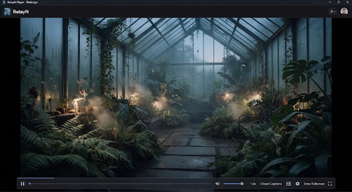

Your media.
In motion.
RelayN Player brings your local audio and video into one focused playback experience — with practical controls, universal codec support, and a calm interface designed for everyday use.

Everything you need,
nothing you don't.
Built for people who value their media, their privacy, and their time.
Universal Playback
Plays virtually every audio and video format out of the box. MP4, MKV, FLAC, OGG, AVI, MOV, WebM, WAV, and hundreds more — no codec packs needed.
Local-First & Private
No accounts, no cloud uploads, no telemetry. Your files stay on your device. RelayN never phones home — your media library is yours alone.
Precise Controls
Playback speed, audio track selection, subtitle management, seek precision, repeat and shuffle — practical controls at your fingertips.
Native Performance
Built with Tauri and libVLC for true native video surfaces and hardware-accelerated decoding. Lightweight, fast, and responsive on both Intel and Apple Silicon.
Audio & Video Equal
Not a music player with video bolted on. Both audio and video are first-class — with dedicated interfaces, metadata display, and artwork presentation.
Calm Interface
Modern editorial design with a restrained character. Your media is the hero — the interface stays out of the way while keeping everything discoverable.
Tailored spaces for
film & hi-fi listening.
True zero-distraction presentation.
When video plays, menus dissolve. Subtitles render with pixel-perfect sub-pixel anti-aliasing and customizable offset timing. Switch audio streams seamlessly for multi-language or director commentary tracks.
Direct NVDEC, VideoToolbox, and VA-API GPU pipelines
BT.2020 wide gamut & HDR10 tone mapping out-of-the-box
Audiophile fidelity, stripped of noise.
Switching to audio opens a serene listening room. High-resolution album art, synchronized timestamped LRC lyrics, and bit-perfect audio streaming to external DACs without OS resampling.
Bypass system audio mixer with exclusive WASAPI & CoreAudio mode
Smoothly scrolling real-time vocal typography tracking
"Diffused morning sunlight through the pines..."
"Quiet echoes of water droplet cadence"
"The room remains still as day begins..."
Engineered light.
Fast by conviction.
RelayN combines Rust native execution, Tauri shell architecture, and libVLC hardware render pipelines. Zero Chromium overhead, zero embedded web engine bloat.
RelayN has no analytics SDKs, no tracking pixels, and no remote update pings unless explicitly requested.
Designed for
your workflow.
Every action is within reach. Navigate, play, and control without leaving the keyboard. Click any key below to test in real-time.
Plays everything you throw at it.
Powered by libVLC — hundreds of codecs, containers, and protocols supported natively.
Built on principles.
The media is the hero
Chrome, controls, and decoration never compete with your content. The interface recedes so your music and movies take center stage.
Local-first by default
No cloud library, no streaming catalog, no account requirement. Your files, your device, your control — that's the entire premise.
Power without clutter
Common playback actions are within easy reach. Advanced actions live in clear menus and contextual controls. Nothing is hidden, nothing screams for attention.
Be honest
No invented features, no inflated performance claims, no misleading privacy guarantees. What you see is what you get — dependable and straightforward.
Autonomous and open to the core.
RelayN is fully free and open source under GNU GPLv3. Audited for zero network telemetry calls, and built to outlive ephemeral cloud services.
Ready to experience
your media differently?
Download RelayN Player for free. Open source, no account required, no strings attached.
Checking the latest RelayN Player release…
RelayN Player is in development and currently targets Windows and macOS. If your architecture is not detected correctly, choose the matching download above. Builds are unsigned until the release process adds platform signing.